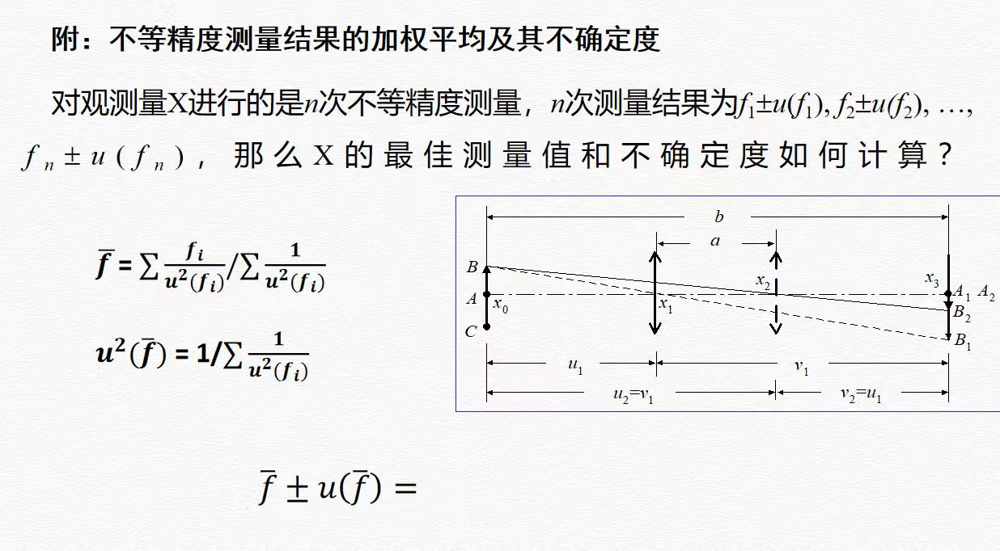

三棱镜顶角测量
实验要点
• 角度输入格式：度.分 (例如 12.25 表示 12°25′, 12.4 表示 12°04′, 12.40 表示 12°40′)
• AB面：α₁ , β₁ AC面：α₂ , β₂ (各测量5次)

原始数据录入
AB面测量 (α₁ , β₁) 格式: 度.分
例如: 120.15 = 120°15′ 45.4 = 45°04′ 300.40 = 300°40′
AC面测量 (α₂ , β₂) 格式: 度.分
例如: 60.30 = 60°30′ 240.5 = 240°05′ 120.10 = 120°10′
开源项目禁止商用 ｜ 自行核对计算数据